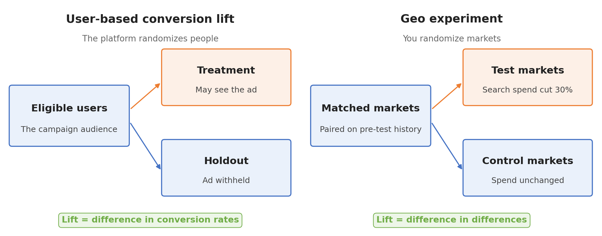
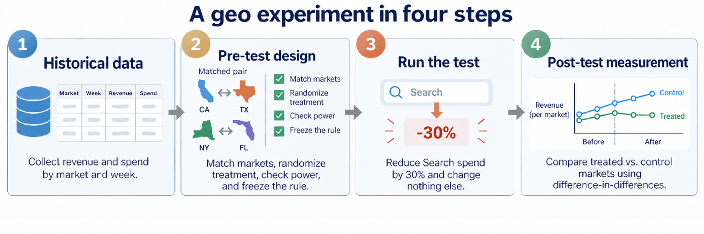
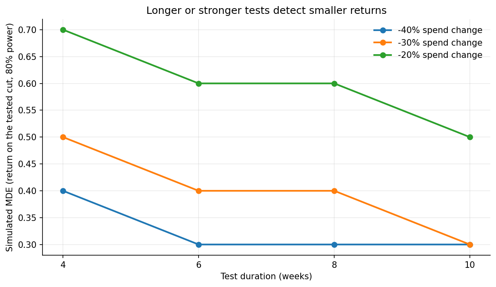

6.3 增量效应实验
关于中文版
本页是英文版 Marketing Science in Python 的AI翻译。英文版为正式版本，如有出入，以英文版为准。代码、Notebook 和图片中的文字保持英文。 阅读英文版
什么是增量效应？
MMM 的优化器想把 Google Search 削减 30%，一直削到它的约束下限，而模型无法为这一举动辩护：Search 的边际 ROAS 区间从 0.4 延伸到 9.5，宽得无法据此行动。第 6.2 节就结束在那里。原因在历史数据里。三年来，Search 一直以几乎不变的周预算常开投放，所以模型从未见过它的支出变动，估计值大体上就是它起步时的先验。基于这样的估计削减一个渠道，是一场赌博，而不是一个决策。在全国范围削减之前，我们需要知道 Search 支出的最后 30% 到底买到了什么。
那个数字就是增量效应。增量效应（incrementality）是指没有广告就不会发生的成果：如果一次活动录得 $120,000 的销售额，而其中 $100,000 本来也会到账，那么增量收入就是 $20,000。归因对那 $100,000 无话可说，而 MMM 只能从历史中的变动来估计它，Search 恰恰没有这种变动。要得到这个数字，我们必须改变数据：做一次实验，由我们来控制什么在变、在哪里变。
选择实验单元
第一个设计选择是随机化什么。基于用户的转化提升研究随机化的是符合条件的人：平台对一个保留组（holdout）不投放该活动，然后比较转化率。地理实验随机化的是市场：测试市场里的所有人都会经历媒体变动，结果就是企业在那里测量到的任何指标。图 1 把两者并排展示。

| 设计问题 | 基于用户的提升测试 | 地理实验 |
|---|---|---|
| 随机化单元 | 符合条件的用户 | 市场或区域 |
| 通常由谁运作 | 广告平台 | 品牌方与分析师 |
| 主要结果指标 | 记录到的转化 | 汇总的业务 KPI |
| 主要优势 | 个体层面的随机化 | 线下与全市场的提升 |
| 主要限制 | 身份识别、追踪、量级 | 单元少、溢出效应、噪声 |
在可用的情况下，基于用户的提升测试是更干净的设计：个体随机化、大样本，还有一个替你干活的控制台。但它测量的是平台能识别的用户中记录到的转化，因此线下销售、向其他渠道的光环效应，以及公司自己账簿上的收入都落在它之外。我们的问题关乎公司账簿上的总收入，而这个决策是一次预算削减，不是一项活动设置。这就指向了地理。地理实验从收入系统读取结果，并能汇总到 MMM 所用的地理-周结构，这正是第 6.4 节将要用到的。基于用户的提升测试的机制在参考文献与延伸阅读中介绍。
四步完成地理实验

图 2 是本章余下部分的地图：构建市场-周历史数据，设计测试并冻结决策规则，运行测试，然后相对于一个可信的反事实测量提升，并应用规则。接下来的四节各对应一个步骤。
配套 Notebook：sec6.3_geo_experiment.ipynb 在一个包含 40 个市场的合成面板上运行完整实验，其 Search 的经济特性与第 6.2 节的模型一致，并植入了真实值，因此下文的每一个估计都可以对照真实值核验。
在 GitHub 上查看
第 1 步：历史数据
下游的一切都来自一张表：每个市场每周一行，包含收入、Search 支出，以及测试期间可能变动的任何其他本地媒体。这里的面板有 40 个市场，测试窗口之前有 96 周的历史；两年很充裕，如果结果的季节性不强，一年也可行。收入必须来自公司自己的系统，并且要在媒体真正可以被控制的地理粒度上。如果 Search 活动只能按州设置，那么州就是你的市场。支出必须是你真正会改变的支出，而不是计划数字。而历史上有已知冲击的市场，比如去年开了一个配送中心的市场，现在就要剔除，因为它无法作为任何东西的对照。
第 2 步：测试前设计
五项决定定义了这项研究，而且全部在任何结果出现之前做出。
- KPI。 收入，来自公司自己的账簿。这是 CFO 的问题所关心的，也是 MMM 所建模的。
- 市场与分配。 按测试前的表现筛选候选市场，组成匹配对，在每一对内部随机分配。
- 支出变动。 在测试市场把 Search 削减 30%。这是优化器的提案，因此测试测量的是正在考虑的政策本身，而不是它的替代物。
- 时长与统计功效。 八周，通过在历史面板上模拟选定。
- 决策规则。 哪种结果导向哪种行动，现在就写下来。
Notebook 把这些选择冻结在一个配置单元格里：
DESIGN = {
"seed": 20260888,
"channel": "Google Search",
"test_start": "2024-02-05",
"test_end": "2024-03-25",
"test_weeks": 8,
"n_pairs": 8,
"spend_multiplier": 0.70, # a 30% pull-back in test markets
"contribution_margin": 0.40, # sets the decision hurdle below
# ...plus `direction`, which records that this test cuts spend so the
# contrast is negative, and the power-simulation grid: durations, spend
# levels, candidate lifts, and the significance level.
}为什么削减而不是加量？因为削减才是摆在桌面上的政策。缩减测量的是当前预算 70% 到 100% 之间那一段支出的回报，也就是优化器提议移除的部分；加量测量的则是其上方的那一段，在弯曲的响应曲线上是另一个量。我们把测得的这个量称为所测削减的回报，而把“边际 ROAS”留给模型在当前支出水平上的斜率；第 6.4 节会把两者联系起来。
市场筛选与分配
只使用历史结果。Notebook 根据每个市场与业务整体的相关性、规模和趋势为 40 个市场打分，保留最强的 16 个候选。它按规模把相邻的市场配对，检查每对内部的趋势平衡，然后在每对内部抛硬币选出测试市场。筛选降低噪声；随机化才是让比较具有因果性的关键。看过结果之后再挑选测试市场，或者因为“那些市场很典型”而手工挑选，会摧毁这一区别。
溢出效应是一个市场筛选问题，事后没有任何估计量能修复它。通勤者在一个市场购物、在另一个市场居住，本地电视跨越边界，全国性促销则处处推动需求。使用互不重叠、媒体真正可控的单元，并让所选市场的其他本地活动保持稳定。一个接收到部分处理的对照市场会把估计值向零偏移，而这在任何拟合统计量里都看不出来。
用模拟确定统计功效与 MDE
在做出承诺之前，先问这个面板能否检测出企业会在意的效应。Notebook 在历史中挑选伪启动日期，减去某个候选回报在计划削减下会损失的收入，重新运行同一个聚类估计量，并统计效应被检测到的次数。在不同时长和削减幅度上重复这一过程，就得到模拟的最小可检测效应，即 MDE。

在 图 3 中，八周内削减 30% 可以检测约 0.40 及以上的回报，而四周则需要 0.50。这些数字属于这个面板。四到八周内 20-50% 的支出变动是常见的起点，不是规则；在你自己的历史数据上做模拟才是规则。
决策规则与设计冻结
MDE 说的是测试能把什么与零区分开。CFO 问的是另一件事：Search 赚得够不够多，值得保住它的钱？“够”是有数字的。在边际贡献率为 \(m\) 时，一美元支出带回 \(1/m\) 的收入才能保本，所以在 40% 的边际贡献率下，一美元 Search 支出必须带回 $2.50。这个门槛是业务输入，不是统计输入，它只裁定一件事：这一段支出到底该不该留在媒体预算里。钱应该改投到哪里，则是横跨全部五个渠道的比较，而那项比较是第 6.4 节的工作。
所以我们在启动前就写下规则。如果所测削减回报的 95% 置信区间整体位于 2.50 之上，保留预算。如果整体位于其下，按优化器的提议削减。如果跨越 2.50，维持全国计划并设计后续测试；看到结果之后再延长这次测试，会把它变成另一次测试。当回报远低于门槛时，这个设计有充裕的功效给出削减裁定；当回报刚好在门槛之下时功效很小；而在这些规模下，给出保留裁定的功效为零。Notebook 用决策本身的单位展示了这三种情况，模拟的是裁定而不是 p 值：
| 削减的真实回报 | P(削减) | P(维持) | P(保留) |
|---|---|---|---|
| 1.5 | 0.99 | 0.01 | 0.00 |
| 2.0 | 0.21 | 0.79 | 0.00 |
| 2.5 | 0.00 | 1.00 | 0.00 |
| 3.0 | 0.00 | 1.00 | 0.00 |
现在冻结一切：市场清单、日期、支出计划、估计量、日历排除项、门槛、随机种子。不要让黑色星期五这样的重大事件横跨测试边界。在没人知道哪个选择会让答案更好看的时候，设计纪律最容易守住。
第 3 步：运行地理测试
这是分析师要做的事最少、要守护的东西最多的一步。在启动日，八个测试市场的 Search 支出下降 30% 并保持不变；对照市场照常运行。本地没有任何其他变动：没有市场层面的促销，没有其他媒体调进来补偿，也没有在对照市场里“顺便也试点别的”。按市场和周记录实际投放的支出，因为第四步的分母是实验移除的支出，而不是计划中的支出。支出没有按计划下降的市场按原分配留在分析中，一对市场只能因为事先定好的理由退出，比如结果数据丢失。而且不要每周去看结果：一个八周的测试在第三周就读数，是一个噪声更大、假阳性率更高的测试。
第 4 步：测试后测量
无论你算不算，利益相关方都会先算出这个数字：测试期间测试市场的收入，对比测试前的八周。在 Notebook 里，这一比较给出的回报是 0.44：测试市场的收入下滑了，但每移除一美元 Search 支出只下滑了约 44 美分，所以削减看起来几乎是免费的。每位广告经理都听过这个论调，后面通常跟着一句“那就再多砍一点”。它在这里是错的，因为进入测试窗口时每个市场的收入都在上升，对照市场也不例外，季节掩盖了削减代价的大部分。这正是我们在第二步选择对照市场的原因。
估计量要跟随分配机制，原则与第 3.3 节相同。匹配对内部的随机化是设计，配对的双重差分就是与之匹配的估计量。基本的交互项是：
model = smf.ols("revenue ~ treat * post", data=analysis).fit(
cov_type="cluster",
cov_kwds={"groups": analysis["pair"]},
)Notebook 的版本把 treat 和 post 主效应替换为每个市场的固定效应和每对市场各自的测试期项，这样某一对市场的本地冲击就不会被读作提升。treat:post 系数是每个受处理市场-周的增量收入，这里为负，因为测试市场相对于它们的配对市场损失了收入。用它的总和除以实验移除的支出，就得到所测削减的回报：两个数都是负数，其比值是每少花一美元所损失的收入。分母必须是实验改变的支出，在这些市场、这些日期上，而不是全国 Search 预算。
与设计一致的估计值是 1.500，标准误 0.257，95% 置信区间 [0.892, 2.109]，按八个匹配对聚类，因为配对才是被随机化的单元，并使用 t 分布，因为只有八对。它恢复了植入的真实值 1.500。每移除一美元 Search 支出，原本大约买到 $1.50 的收入，是前后对比所暗示的三倍还多。
结果站得住吗？
来自一个估计量的一个估计值只是一个主张；下面的检查才把它变成一个结果。
第一，测试前期间。Notebook 里的事件研究图把每对市场对齐到启动前一周，测试前期间的差异在零附近波动而不是漂移。如果它们漂移了，配对就不平行，DiD 测的就会是漂移。
第二，另一个反事实。合成控制把八个测试市场汇总起来，用未处理的捐赠单元构建一个加权组合，权重非负、和为一，并使测试前误差最小。测试前期间的紧密拟合是入场券。这里它拟合得很好（图 4），合成控制的估计值是 1.486，接近 DiD，也接近真实值。两个以不同方式压缩未处理信息的估计量仍然一致，这是有信息量的；但它不是把各种方法平均到心仪数字出现为止的许可证。

第三，安慰剂检验。空间安慰剂问的是，在从未发生过的分配下，分析会报告什么。八对市场，在每对内部交换角色，得到 \(2^8 = 256\) 种可能的分配，少到可以穷举。按构造，它们的分布以零为中心，而 256 种中只有 2 种给出的估计值至少与观测到的 1.500 一样极端（图 5），随机化 p 值为 0.008。时间安慰剂把同样的八周窗口在更早的历史中移动；它们的均值是 0.053，假效应分布在零的两侧，而不是每个日期都出现重复的提升。

因为分配是随机化的，安慰剂分布就是设计自身的参考分布。在非随机化的匹配市场研究中，做同样的检查，但不要借用随机化的语言：那时的因果主张依赖于合成反事实，以及“没有未测量的冲击把所选市场分开”这一论证。Meta 的 GeoLift 和 Google 的 CausalImpact 正是为这种情境而建。
从提升到决策
现在应用我们冻结的规则。门槛是 2.50，而区间上限 2.109 位于其下。规则说：削减。每移除一美元原本买到 $1.50 的收入，在 40% 边际贡献率下是 60 美分的贡献，无论怎么解读不确定性，都无法让这一美元回到一美元。
注意这个决策没有依赖什么。效应的显著性已达到这个设计所能达到的极致：256 种安慰剂分配中只有两种，区间以很大的余量排除了零。读到“ROAS 1.5，p 小于 0.01”的利益相关方会听成 Search 有效，而这两半都是真的。预算仍然要削，因为问题从来不是广告是否推动了收入。问题是最后这 $421,906 推动的收入是否足以覆盖自身成本，而 $1.50 的收入只是 60 美分的毛利。把会议开成“它显著吗”，Search 就保住了钱。把会议开在门槛上，同样的数字说：削减。一次测试可以确立一个效应，却仍然无法为这笔支出辩护。
还有一个数字要带到下一章。按十六个市场而不是八对聚类很常见，它把标准误从 0.257 收窄到 0.176，区间变为 [1.126, 1.875]。但它也把同一次抛硬币的两半当作相互独立，而它们并不独立，所以按配对的读数才是我们预先指定的那个。两种方式的裁定相同，因为两个区间都止步于 2.50 之前，但配对区间离它只有不到 0.4。两个宽度都要送到第 6.4 节。
我们所知道的既精确又狭窄：这次 30% 削减的效应，在这些市场，在这八周窗口内。它是响应曲线上的一个点，交接时要保留这一范围。
| 证据字段 | 冻结值 |
|---|---|
| 渠道 | Google Search |
| 设计 | 8 个随机化匹配对 |
| 日期 | 2024-02-05 至 2024-03-25 |
| 测试市场的基线支出 | $1,406,355 |
| 移除的支出 | $421,906 |
| 所测削减的回报（30% 区段） | 1.500 |
| 标准误（按配对聚类，预先指定） | 0.257 |
| 标准误（按市场聚类） | 0.176 |
| 95% 置信区间（配对聚类 t 分布） | [0.892, 2.109] |
| 随机化 p 值 | 0.008 |
| 测试市场占全国 Search 支出的份额 | 19.9% |
| 估计目标 | 在所选市场 8 周内削减 30% 对收入的效应 |
证据支持在所测的运行区间内削减 30%。把它推广到全国，是在假设其余 32 个市场的表现与这八个相同，所以推广要在同样的护栏下进行，并把实际投放的支出和收入与这一预测对照追踪。释放出来的预算在别处能否赚得更多，是留给那个看得见全部五个渠道的模型的问题，第 6.4 节会提出它。
要点
- 增量效应是没有广告就不会发生的成果。先选择单元和设计，再选择估计量；在你自己的历史数据上模拟统计功效；冻结决策规则。
- 依据业务门槛而不是显著性做决定：一次测试可以确立一个效应，却仍然无法为这笔支出辩护。交接估计目标、它的不确定性和它的运行点，而不只是一个 ROAS。